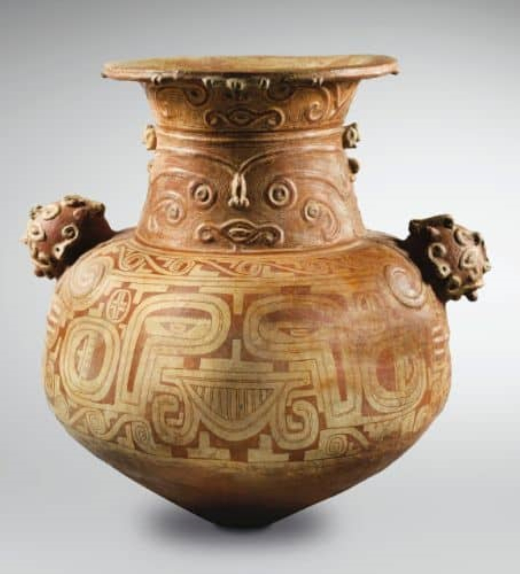

ARTE INDÍGENA BRASILEIRA
A arte indígena brasileira é composta por tudo que é produzido pelas etnias indígenas do país e representa a cultura e a tradição desses povos. Sendo muito rica e composta por diversos elementos carregados de simbologias antigas.